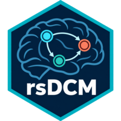

rsDCM provides robust and sparse group inference for Dynamic Causal Modelling (DCM) and an R port of deterministic single-state fMRI DCM and Parametric Empirical Bayes routines from SPM25.
The group method combines:
- a Student-t likelihood after block-covariance pre-whitening
- a Gaussian-spike and nonlocal product-moment (pMOM)-slab prior
- multistart generalized EM with conditional maximization
- parallel-tempering integration of posterior inclusion probabilities
- conditional Laplace standard deviations for group coefficients
Student-t weights describe atypical residual coordinates in the selected whitening basis. They should not be interpreted as invariant whole-subject weights.
Installation
Install the released version from CRAN:
install.packages("rsDCM")Install the development version from GitHub:
# install.packages("remotes")
remotes::install_github("Kay202/rsDCM")Quick start: Robust and sparse group inference
library(rsDCM)
set.seed(1)
N <- 12L
p <- 3L
X_G <- matrix(1, N, 1, dimnames = list(NULL, "intercept"))
eta <- matrix(rnorm(N * p, sd = 0.25), N, p)
eta[, 1] <- eta[, 1] + 0.7
colnames(eta) <- paste0("P", seq_len(p))
Cp <- replicate(N, diag(0.1, p), simplify = FALSE)
V <- lapply(seq_len(p), function(j) {
z <- matrix(0, p, p)
z[j, j] <- 1
z
})
fit <- rsdcm(
eta, Cp, X_G, V, n_starts = 1L, max_iter = 100L,
pip_mcmc_iter = 1000L, pip_mcmc_burn = 400L,
pip_mcmc_thin = 5L, pip_mcmc_chains = 2L,
pip_mcmc_temperatures = 4L, verbose = FALSE
)
cbind(fit$beta_mat, PIP = fit$inclusion[, 1])Single-subject DCM
data(toy_dcm)
fit_dcm <- dcm_estimate(toy_dcm)
round(fit_dcm$Ep$A, 3)
fit_dcm$FSee vignette("introduction", package = "rsDCM") for further details.
Source organization
-
R/rsDCM.Rcontains the novel robust and sparse group method. -
R/DCM.Rcontains the SPM25-derived MATLAB ports. -
src/contains the registered C++ parallel-tempering sampler.
License and acknowledgment
The package is licensed under GPL-2. The SPM25-derived functions remain subject to their original copyright and license. See LICENSE.note for the list of ported routines.
References
Arhin, G. and Sanyal, N. (2026). Robust and Sparse Group Dynamic Causal Modeling via Student-t Parametric Empirical Bayes and Nonlocal Priors. doi:10.48550/arXiv.2609.06379
Friston, K. J., Harrison, L., and Penny, W. (2003). Dynamic causal modelling. NeuroImage, 19(4), 1273–1302. doi:10.1016/S1053-8119(03)00202-7